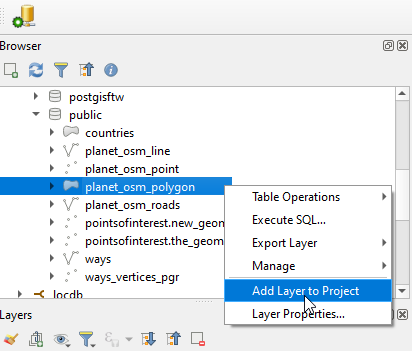
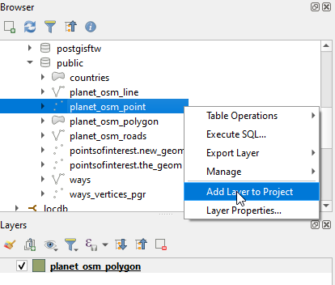
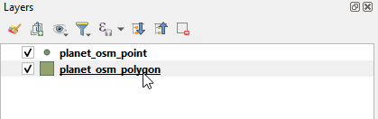
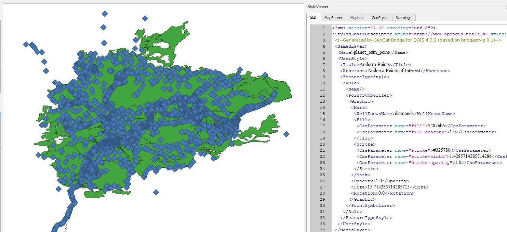

Publish Styles Only¶
Table of Contents
Add Layers to QGIS¶
Previously, we used osm2pgsql to import a PBF file to our PostGIS database.
However, we never published the layers created to GeoServer.
1. Create a new qgis project, andorra.qgs
2. Expand the geosuite PostGIS connection


3. Add the planet_osm_polygon layer to the project

4. Add the planet_osm_points layer to the project

Create Styles¶
1. In the top menu, go to Web > GeoCat > StyleViewer

2. As shown below, the SLD style for our layer is displayed

3. Double click the planet_osm_polygon layer to open the Properties box

4. On the Symbology section, select a new fill color and click Save

5. Our new polygon style is updated as below

6. Repeat for the planet_osm_points layer, selecting ‘Blue Diamond’

7. Again, we see the SLD style for the layer is displayed on save

Publish Styles¶
1. As before, go to Web > GeoCat > Publish

2. In order to publish only our styles to GeoServer, tick the “Symbology only” checkbox and then click Publish

3. We should see a success message like below

Set Styles in GeoServer¶
1. Log in to GeoServer and click Add New Layer

2. Click the publish links for planet_osm_polygon and planet_osm_points layers from our PostGIS store

3. Go to Layers and select the planet_osm_polygon layer

4. On the Publish tab, select the green polygon style we uploaded above

5. Repeat for the planet_osm_points layer

6. The styles we created in QGIS and uploaded using GeoCat Bridge are now applied